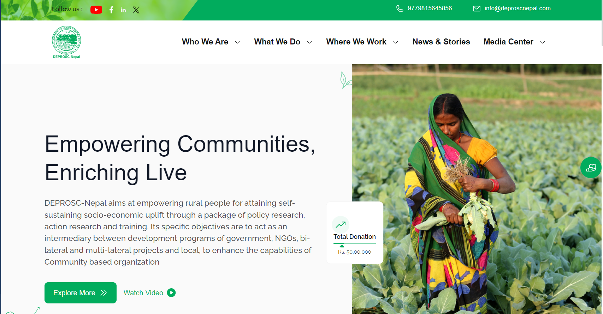
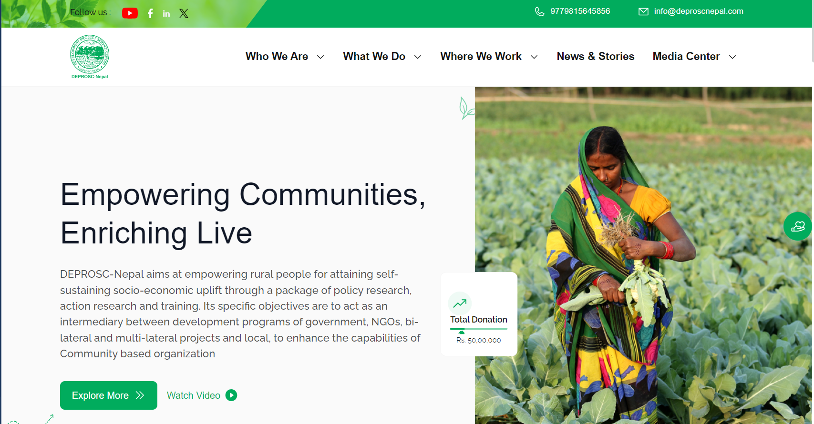
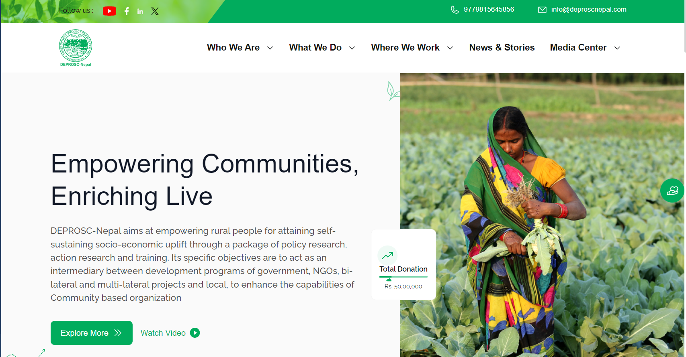
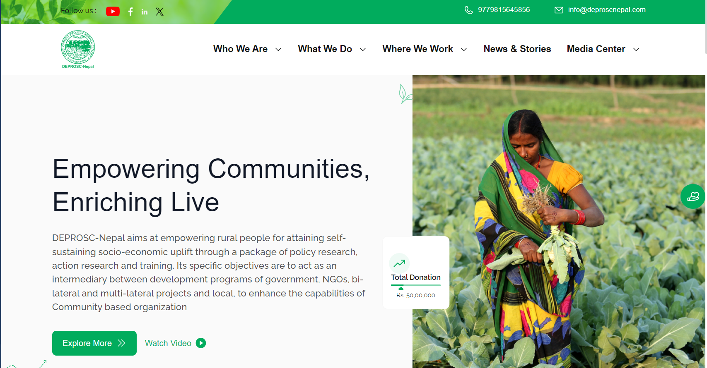

WHERE WE TRANSFORM
YOUR IDEAS INTO REALITY

 



As you scroll, notice how the green circle moves downward and the row of images slides to the left. This creates a dynamic visual effect that adds depth to the page.